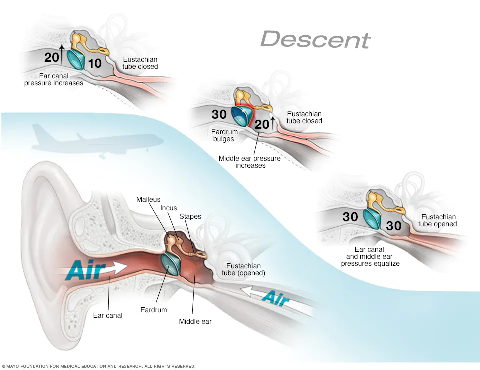

El barotraumatismo del oído es la presión en el tímpano que ocurre cuando la presión del aire en el oído medio y la presión del aire en el ambiente están desequilibradas. Podrías presentar barotraumatismo cuando estás en un avión que está subiendo después del despegue o descendiendo para aterrizar.
El barotraumatismo puede aparecer en uno o en ambos oídos. Los siguientes son signos y síntomas frecuentes:
Durante una inspección del oído, el médico puede observar un leve abultamiento del tímpano hacia afuera o una retracción hacia adentro. Si la afección es severa, puede haber sangrado detrás del tímpano. Es posible que sea difícil diferenciar el barotrauma severo de una infección en el oído.
El barotraumatismo se produce cuando la presión del aire en el oído medio y la presión del aire en el ambiente no coinciden e impiden que el tímpano (membrana timpánica) vibre normalmente. Un pasaje estrecho llamado trompa de Eustaquio, que está conectado al oído medio, regula la presión del aire. Cuando un avión sube o baja, la presión atmosférica cambia rápidamente. La trompa de Eustaquio a menudo no puede reaccionar lo suficientemente rápido, lo cual causa los síntomas del barotraumatismo. La deglución o el bostezo abren la trompa de Eustaquio y permiten que el oído medio obtenga más aire y se iguale la presión del aire.
El barotrauma generalmente no es canceroso (benigno) y responde bien a los cuidados personales. La hipoacusia casi siempre es temporal.